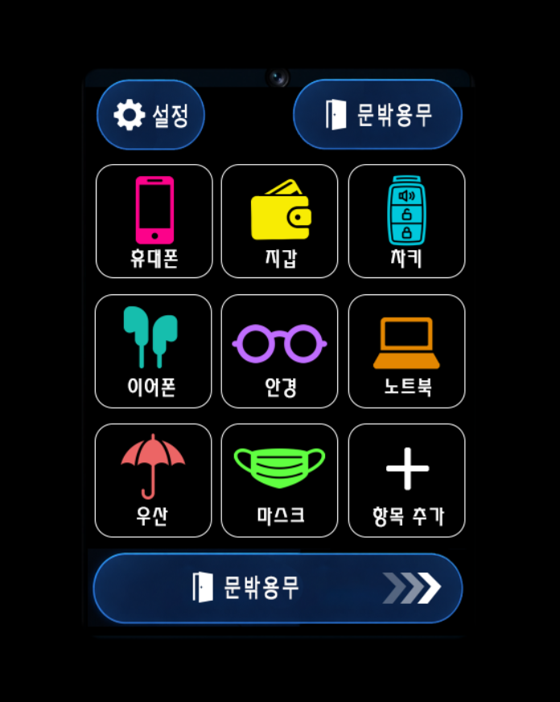
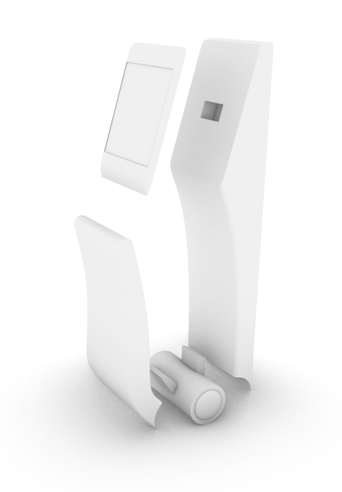
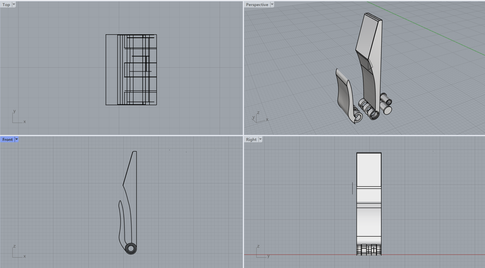

사용자 인식
사용자별 체크리스트를 표시하도록 설계한 개념입니다.
PROJECT 02 / PRODUCT DESIGN
외출 직전 필요한 물건을 빠뜨리지 않도록 돕는 체크리스트 기반 스마트 도어락. 기존의 잠금 기능에 준비물 확인 경험을 결합합니다.

열쇠, 지갑, 휴대전화처럼 매일 챙겨야 하는 물건을 놓치는 상황에 주목했습니다. 문을 열고 나가는 행동과 준비물 확인을 연결해 별도의 앱 실행 없이 필요한 정보를 확인하는 경험을 제안합니다.

사용자별 체크리스트를 표시하도록 설계한 개념입니다.
기본 항목과 개인 맞춤 항목을 터치하여 확인합니다.
준비물 확인 후 문을 열고 외출하는 흐름을 제안합니다.
푸시풀 손잡이와 디스플레이의 결합 방식을 검토한 스케치를 추가하세요.
추가할 파일: images/door-sketch-1.jpg체크리스트 배치와 화면 동작을 검토한 자료를 추가하세요.
추가할 파일: images/door-sketch-2.jpg

3D 프린팅, 후가공, 조립 사진을 추가하세요.
추가할 파일: images/door-process-1.jpg손잡이 조작과 화면 가독성 검토 사진을 추가하세요.
추가할 파일: images/door-process-2.jpg실제 도어락 전시 및 관람 모습을 추가하세요.
추가할 파일: images/door-exhibition.jpg